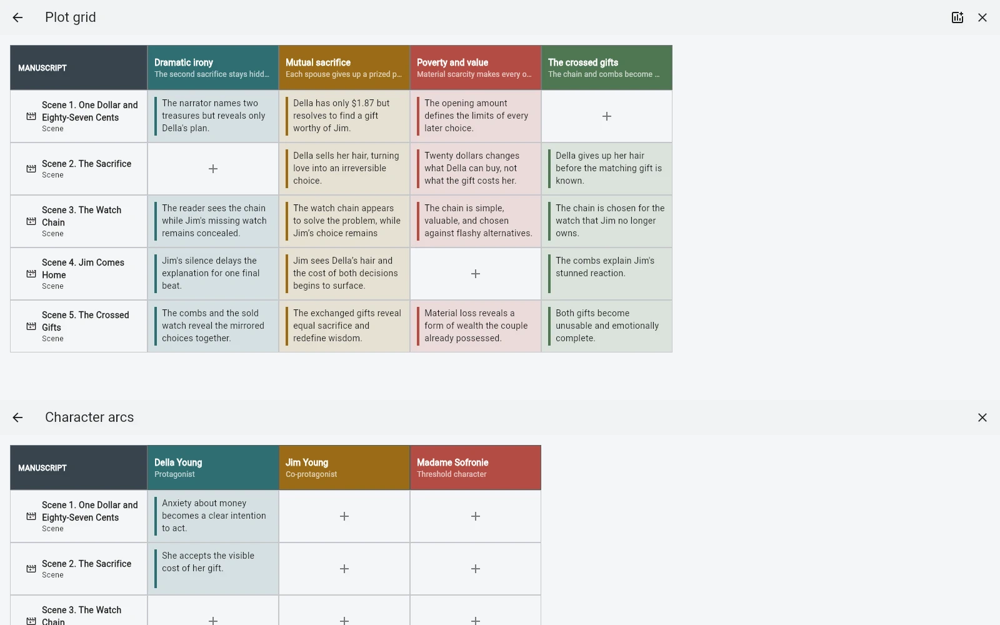

Chapters answer “what happens next for the reader?” Plotlines answer “where does this particular conflict, mystery, relationship or theme move?”
One chapter can advance several threads
A scene may develop the main conflict, reveal part of a mystery and change a relationship at the same time. Making each of those a separate chapter hierarchy would distort the manuscript.
A plotline lets you inspect absence
The useful question is often not where a thread appears, but where it disappears. If an important mystery vanishes for eight chapters, or a relationship arc receives no movement through the middle of the book, a plotline view makes that easier to notice.

Plotlines are not a second outline
They should not duplicate the chapter tree. Their job is to add another dimension over the same manuscript, so a scene can belong to the real book order and still participate in several narrative threads.
When not to use them
If the story has one simple line and you can hold it in your head, a plotline model adds no value. Use it when parallel threads become difficult to reason about during revision.